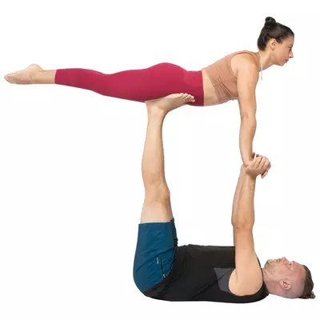
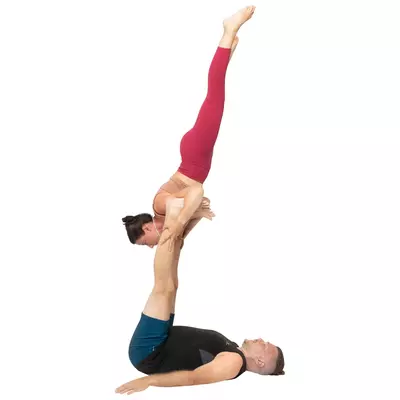

 Front PlankFront BirdBowReverse Front BirdReverse Front PlankBack PlankBedBack BirdBack Bird on HandsHigh Flying WhaleHammockThroneStraddle ThronePidgeon PoseReverse ThroneNinja PoseFoot to ShinShin to FootAsymInside StarSide StarOutside StarReverse Outside StarVishnus CouchReverse CouchFolded LeafCandle Sticksupported ShoulderstandNeedlesupported Reverse Shoulder StandReverse Shoulder StandReverse NeedleFloating PaschiLovers BoxBatStraddle BatStarReverse StarBicep Stand  Reverse Bicep StandCrocFoot to Forearm(low) Foot to HandFoot to HandReverse Foot to Forearm(low) Reverse Foot to HandReverse Foot to HandFoot to FootReverse Foot to FootTuck SitL- SitTitibasanaReverse Tuck Sit(low) Hand to HandHand to ForearmHand to Hand(low) Reverse Hand to HandReverse Hand to Hand